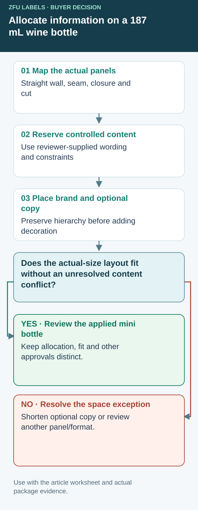

Allocate the mini bottle's information before reducing artwork
Build a panel allocation sheet from the actual mini bottle and the approved content supplied by the responsible reviewer. Start with the usable surfaces, then assign content. Starting with the flagship label's proportions can force small text into the remaining space before anyone has decided what belongs on the front, back or another approved component.

| Allocation row | Record for the actual mini bottle | Exception to resolve |
|---|---|---|
| Product/market | Wine identity, container and intended selling route | Review assumptions changed from the larger bottle |
| Available panels | Straight-wall limits, seam and proposed cut references | Nominal bottle volume does not define usable area |
| Controlled blocks | Approved wording and reviewer-supplied constraints | Do not reduce or relocate without the relevant review |
| Brand hierarchy | Primary identity and essential brand cues | Decide what can remain recognizable at final size |
| Optional story | Proposed front/back allocation | Shorten or omit before crowding controlled information |
| Code/date fields | Data owner, location and later marking method | Evaluate the applied position, not only the PDF |
| Pack-out | Bottle orientation and insert contact | Keep the intended reading view practical |
TTB's small-container discussion addresses adjusting approved artwork while preserving applicable legibility and type requirements. Obtain the product-specific regulatory decision; the sheet above does not authorize an alteration or treat one type-size number as the complete rule for the package.
Resolve the first space conflict explicitly
In a hypothetical 187 mL gift-set project, the flagship story paragraph consumes most of the proposed back panel. The options could include shorter optional copy, a revised front/back split or another acceptable physical format. Have the brand choose which message to sacrifice before the designer scales down every line. A neck component may help a particular brand cue, but it also adds a tapered application job; it is not free extra space for uncontrolled information.
Prepare an actual-size layout carrying the real intended blocks. Apply it to the mini bottle with its intended closure and inspect the reading sequence as the bottle is turned. An office-paper layout can resolve allocation and fit without proving print, adhesion or market compliance. Keep that limit attached to the sample.
Record exceptions across the mini range
If two bottle suppliers offer the same nominal volume, check their actual panels separately. A shared design system does not establish a shared cut outline. Record which variant needs a changed footprint or content allocation, and ask purchasing to price the resulting component set and application work.
Use the back-label proof register after the content is allocated, the neck-label guide for that separate surface and the small-radius guide for edge behavior. This sheet owns information capacity on the mini pack, rather than approving those other physical properties.
A smaller bottle changes the layout problem
On a 187 mL bottle, the shoulder and base consume a larger share of the glass than many designers expect. I would not reduce a 750 mL label in one click and send it to press. Start with the actual straight wall and a physical paper wrap. Decide which information belongs on the front, what can move to the back, and where a narrow seam is acceptable.
A composite gift-set buyer wants the mini bottle to look identical to the flagship 750 mL SKU. I would preserve the brand cues but rebuild the type hierarchy. The alternative is a lovely miniature that asks the buyer to read through a magnifier. That is not premium.
Make regulatory space before embellishment
For wine sold in the United States, TTB's wine FAQ specifically discusses adapting an approved label to a smaller container and notes minimum type-size requirements for mandatory information on containers of 187 mL or less. The actual approval path and final artwork need the winery's regulatory review; a printer should not substitute design taste for that decision.
The fictional Cedar Vale bottle photograph demonstrates scale and placement only. Its simplified front artwork is not a U.S. retail-compliance template. I would reserve the back or a second label for approved mandatory copy before adding foil, texture or a neck tag.
Paper, film and wet service are separate decisions
A textured paper can make a miniature gift bottle feel considered, especially when it remains dry. If these bottles will be chilled in ice or handled wet at events, test the chosen construction on filled bottles. A film face or wet-strength paper may be appropriate, but the adhesive also needs a real application and service trial. There is no universal "wine label" stock.
The most expensive surprise is a decorative face that looks good at approval but scuffs during carton packing. Handle a short trial exactly as the fulfillment team will, including inserts, partition rub and removal from the gift box.
Give the converter the complete set
Send the exact 187 mL bottle and closure, front and back usable-panel dimensions, approved text, target market, wet-service expectations, pack-out method, number of SKUs and order quantities. Ask for a print-size proof, not just a PDF zoomed to fit the screen.
When the brand wants a neck label as well, measure that zone separately; the neck tapers and may need its own shape. Keep the first trial about fit and legibility. Embellishment comes after those two questions are settled.
Our buying view
What we would decide first
Protect legibility and fit on the real 187 mL bottle. A real production sample can settle that question before a full printed roll is ordered.
Related buyer guides
Frequently asked questions
Can I shrink a 750 mL label for a 187 mL bottle?
Do not assume so. Rebuild the hierarchy on the actual bottle and review market-specific mandatory text size and placement.
Do mini wine bottles need separate front and back labels?
Often that is the clearest layout, but the final configuration depends on bottle geometry and the approved market-specific artwork.
Send the unresolved specification question
Include actual mini bottle and closure, front/back panel views, approved-copy status and constraints, SKU quantities and unresolved allocation.
Prepare a label specification inquiry. The contact form opens an email draft; review it and use the listed email or WhatsApp route for attachments. Available construction, sample scope, pricing and timing require confirmation for the actual job.